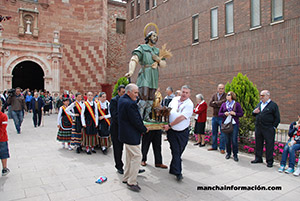
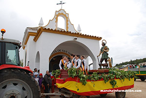

La fiesta en nuestros díasAutora: Yolanda Gallego Monedero - Fotos cedidas por manchainformacion.comCada 15 de mayo, Alcázar de San Juan se dispone a disfrutar de la romería con más tradición local. En realidad, no han cambiado tanto las costumbres de los alcazareños cuando llega este día: peregrinaje al Cerro de San Isidro, remolques decorados para la ocasión, seguidillas manchegas, y por supuesto, comida y bebida de la tierra. No pueden faltar el vino manchego y los chorizos y morcillas. Son numerosos los grupos de alcazareños que este día se reúnen en el Cerro para preparar unas sabrosas gachas con tocino, unas migas de pastor, o una pipirrana. La diversión está asegurada. Y los niños, y no tan niños, pueden disfrutar de un paseo a caballo, y de los puestos y tenderetes que llenan la loma del Cerro. En cuanto a la tradición religiosa, la función principal a San Isidro Labrador tiene lugar en nuestra Iglesia de San Francisco, y además de todos los fieles que asisten a dicha función, las autoridades de nuestra localidad están siempre presentes. Como debe ser, el coro de San Francisco, hace los honores, deleitándonos con sus voces. Y, como manda la tradición, el Santo es subido al remolque, y junto con la reina y damas de honor, se procede a su traslado hasta la Ermita en el Cerro que lleva su nombre. El Santo va precedido por otro remolque ocupado por los hermanos cofrades y el Padre Superior de los Padres Franciscanos de la localidad, Don Luís Pérez Simón. Allí, es situado en la ermita, junto con la otra imagen del Santo que reside todo el año, y junto con las Santas Apolonia y Águeda. A lo largo de toda la jornada, el Santo recibe la visita de los alcazareños, en la ermita. Y ya, caída la tarde, se procede a hacer el recorrido opuesto y devolver al Santo a la Iglesia en la que permanece el resto del año. Son muchos los que esperan en el Cerro hasta que “baja el Santo” y tras regresar al pueblo, terminan la fiesta por los bares y pubs de la localidad. |
 Revista San Isidro 2015  Revista San Isidro 2015 |
BREVE HISTORIA AGRÍCOLA Y GANADERA (2ª Parte)
En el Priorato de San Juan se tenía costumbre de prestar a los agricultores un tercio de los diezmos para la siembra.
En el Libro de Cuentas 1612-1628 folio 90 nos encontramos la siguiente reseña:
“Mas doce reales que pagó a Diego García de Siruela, vecino desta villa, ...
En el Priorato de San Juan se tenía costumbre de prestar a los agricultores un tercio de los diezmos para la siembra.
En el Libro de Cuentas 1612-1628 folio 90 nos encontramos la siguiente reseña:
“Mas doce reales que pagó a Diego García de Siruela, vecino desta villa, ...

EL HISTORIAL CAMPESINO
Fácil es señor doctor,
decir no bebas más vino
y que difícil que es
para el que nació campesino.
Yo que desde muy pequeño
dediqué mi vida entera
y en darle puse mi empeño,
rango, prestigio y solera..
Fácil es señor doctor,
decir no bebas más vino
y que difícil que es
para el que nació campesino.
Yo que desde muy pequeño
dediqué mi vida entera
y en darle puse mi empeño,
rango, prestigio y solera..
ALGUNOS MILAGROS DE SAN ISIDRO
No todos sabrán de la gran cantidad de milagros que se le atribuyen a San Isidro Labrador, muchos de ellos, post mortem. Cuatrocientos treinta y ocho milagros en total, de los cuales vamos a contar aquí los más conocidos.
No todos sabrán de la gran cantidad de milagros que se le atribuyen a San Isidro Labrador, muchos de ellos, post mortem. Cuatrocientos treinta y ocho milagros en total, de los cuales vamos a contar aquí los más conocidos.
SOLAMENTE HACE 50 AÑOS ...
Tuvo lugar una catástrofe climatológica en toda la zona de La Mancha. Un gran frente frío cruzó toda la Península dejando fuertes heladas y copiosas nevadas que hizo que durante varios días la nieve se quedara congelada sobre todos los cultivos de la zona.
En esos días, concretamente durante los días del 19 al 22 de Febrero de 1.965 ...
Tuvo lugar una catástrofe climatológica en toda la zona de La Mancha. Un gran frente frío cruzó toda la Península dejando fuertes heladas y copiosas nevadas que hizo que durante varios días la nieve se quedara congelada sobre todos los cultivos de la zona.
En esos días, concretamente durante los días del 19 al 22 de Febrero de 1.965 ...
| Teléfono: 654 53 82 29 (Jesús) Casa Parroquial de la Iglesia de San Francisco Plaza de San Francisco, s/n 13600 - Alcázar de San Juan (Ciudad Real) |
Síguenos en |